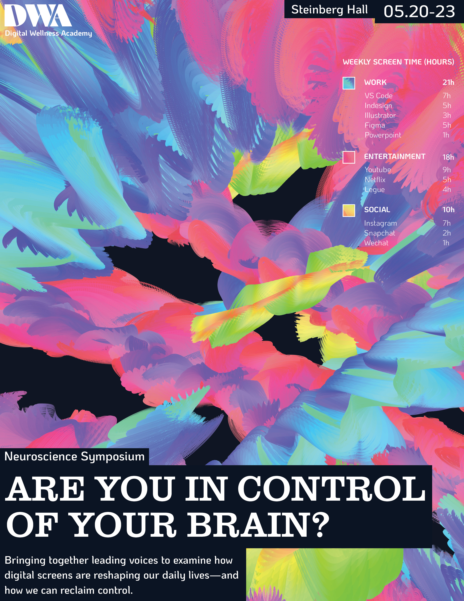
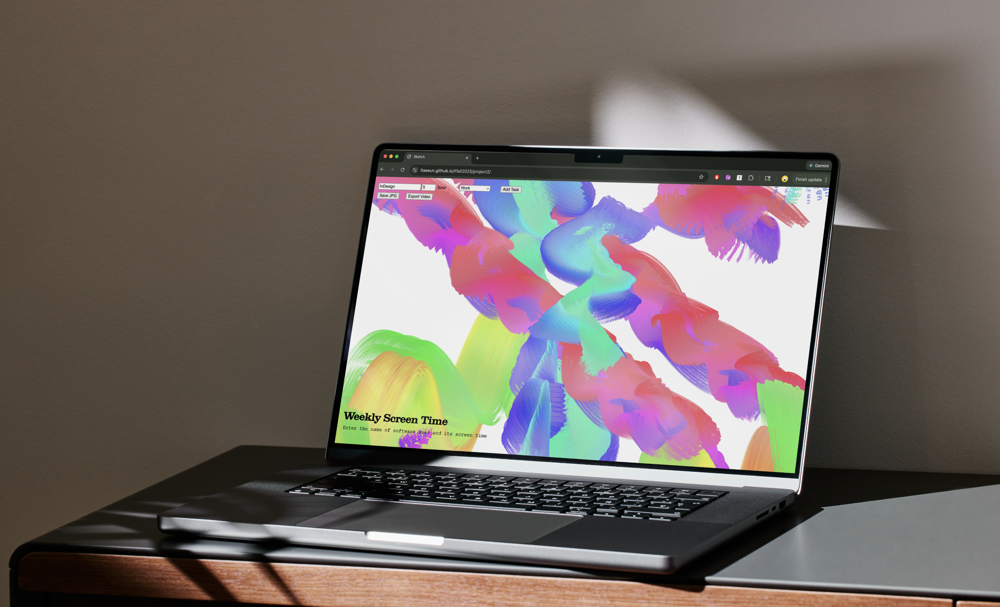
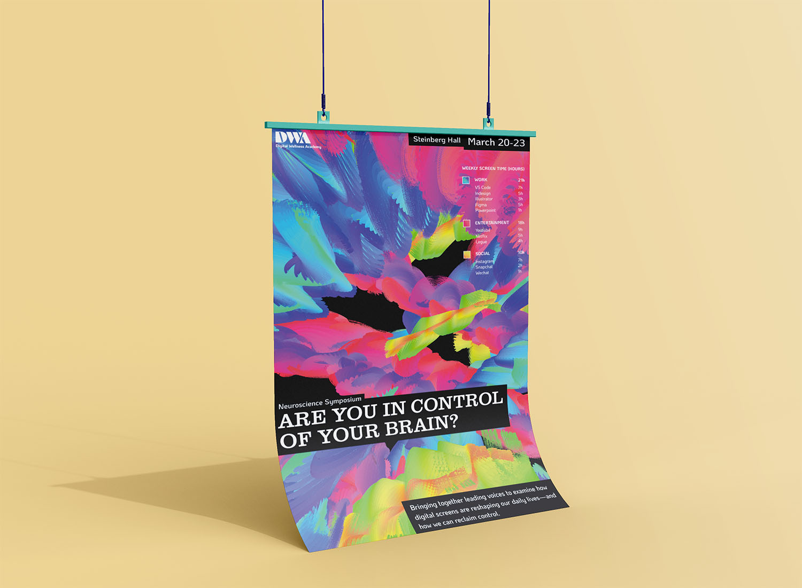
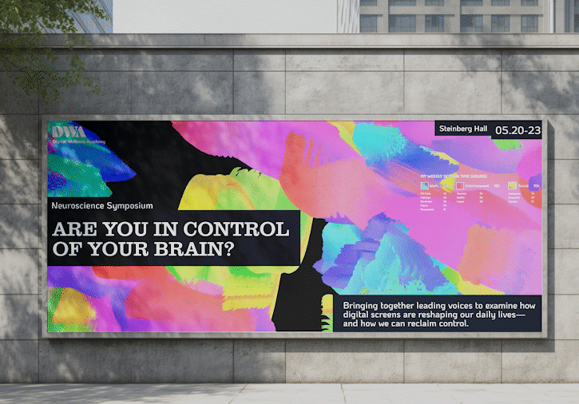

Creative Coding:
Screen Use Symposium
년도
작업 도구
지도 교수
2026
p5.js, Indesign
Luiz Ludwig

Context
현 디지털 시대에서는 ‘스크린 타임 기록’이 개인의 성향과 특성에 대한 포괄적인 정보를 제공합니다. 이에 따라 전자기기 사용을 주제로 한 과학 심포지엄 “Are you in control of your brain?” 의 홍보물을 위해 개인의 스크린 타임 데이터에 반응하여 변화하는 키네틱 타이포그래피를 디자인하였습니다.
Strategy
키네틱 타이포그래피는 개인의 스크린 사용을 ‘업무 (Work)’, ‘오락 (Entertainment)’, ‘소셜 (Social)’ 세 가지 범주로 구분하였습니다. 사용 시간이 길어질수록 타이포그래피의 크기와 속도가 증가하며, 화면 위에 이동의 흔적을 남깁니다. 이 요소들은 서로 상호작용하고 중첩되며, 개인의 자아를 반영하는 하나의 통합된 시각물을 완성합니다.
키네틱 타이포그래피

p5.js로 구현된 키네틱 타이포그래피의 화면


타이포그래피의 예시
Process
각 카테고리는 서로 다른 색상과 움직임을 통해 표현하였습니다. ‘업무’는 파란색으로 표현되며, 보다 구조적이고 목표 지향적인 움직임으로 차분하게 위로 상승하는 흐름을 보입니다. 반면 ‘오락’은 분홍색으로, 보다 자유롭고 예측 불가능하게 움직이며 웹 서핑의 감각을 시각화합니다. ‘소셜’은 노란색으로 표현되며, 리본처럼 이어지는 연속적인 흐름을 통해 사람 간의 연결과 상호작용을 상징합니다.
홍보물의 디자인 시스템에서는 화면 속 여러 창의 탭을 연상시키는 검은색 블록을 활용하였습니다. 키네틱 타이포그래피를 제외한 요소에는 흑백 팔레트를 적용하여, 시각화 속 색상의 대비와 강조를 극대화하였습니다.

poster

name tag

billboard screen